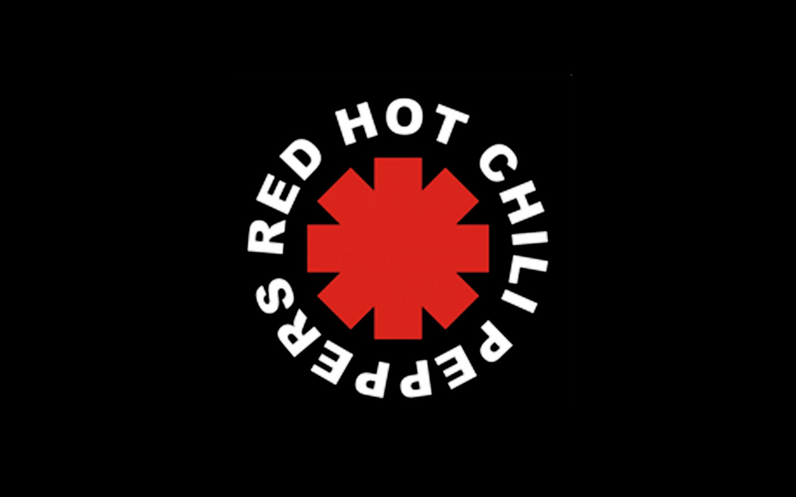

-
-
-
-
American rock band formed in 1985 in Los Angeles around the American singer Axl Rose (William Bill Bailey, 1962) and the British guitarist Slash (Saul Hudson, 1965). His provocative image, his philosophy faithful to the slogan "sex, drugs and rock and roll" and his aggressive lyrics were always a source of scandal. His combination of hard rock and punk was a smash hit: Appetite for Destruction (1987) sold eight million copies in the United States alone. His albums Use Your Illusion I and II (1991) and The Spaghetti Incident? (1993) were similarly successful.
Their first album, Live ... like a suicide (1986), went unnoticed, but after an intensive series of concerts throughout the Californian territory, the production company Geffen Records signed them at the end of 1986. The following year they had an excellent opportunity to give themselves to be known nationally by becoming the opening act for a tour of the legendary Iron Maiden, although the new band could not complete it: Axl Rose lost his voice in the middle of the tour and Slash had to be taken to a clinic to recover from his continuous alcohol and drug abuse.
They returned to the stage as the opening act for Mötley Crue and released their first album, Appetite for Destruction, in August 1987. A long fourteen-month national tour would lead them to become the most sought-after rock performers for directing, even above the Aerosmiths. In July 1988 they released the single Sweet Child o'Mine, which would be the band's first number one and would receive the Grammy award for best rock song of the year. They interrupted their American tour to play at the legendary Donnington Monsters of Rock festival (Great Britain), in which the band had to stop their performance three times to calm the feverish crowd. Favored by live performances, in September 1988 his album Appetite for Destruction reached number one on theAmerican charts.
At the end of 1988 they released G 'N' R Lies, with four songs from their first album and four new songs, coinciding with a tour of Japan. In 1991, a great project finally came to light: Use Your Illusion, an album composed of two double discs (numbered I and II) that initially did not meet the expectations of success, despite the undoubted quality of most of the albums. themes contained in both volumes, such as Estranged, Civil War, Don't damn me or the version of the classic Knockin 'on heaven's door, by Bob Dylan.
The irregular lives of its members caused long periods of inactivity in the band. In 1992, the composer of many of his songs, Izzy Stradlin, left Guns N 'Roses and formed his own group: The Ju Ju Hounds. The last work of the formation, The Spaghetti Incident ?, dates from 1993, with a very delayed edition due to the company's veto on the inclusion of a song (Look at your own way) composed by Charles Manson, one of the most murderous murderers. famous people in recent American history. The album was a kind of tribute by the band to all those songs and groups that had left their mark on their music. Axl Rose himself has pointed out the multiple influences that are amalgamated in the sound of Guns N 'Roses: from The Beatles, Rolling Stones and Queen to AC / DC, Aerosmith and Pink Floyd.
At that point, Guns N 'Roses had already acquired an international reputation that surpassed, in a way, the possibilities of survival of a group that, as such, ceased to exist. Since then, Slash has worked with artists as diverse as Michael Jackson, Iggy Pop, Lenny Kravitz or the Spanish singer Marta Sánchez; the only one who remained active on the music scene was Izzy Stradlin with his Ju Ju Hounds, albeit with a modest presence on the local Los Angeles circuit.
In December 1999, their record company, Geffen Records, released the band's latest work: Live Era '87 -93', a live album (with sensitive studio tweaks) containing their best ever hits and a the only unreleased song (It's allright), despite the fact that it was part of the group's live repertoire since the earliest times.
The launch of this work, as well as the inclusion of a new song (Oh, my good!) In the soundtrack of the film of The End of Days (1999), starring Arnold Schwarzenegger, triggered the rumors about the return of Guns N 'Roses, without it being specified how many of its original members of the band would return with it. It was finally Axl Rose who reconstituted the group with new members. The formation returned to the stage in 2001 and, after many problems and postponements, released in 2008 the first album of its new stage, Chinese Democracy, promoted on a tour with the same name.
| Song | Original Release | Year | ⭐ |
|---|---|---|---|
| Mama Kin | Live... Like a Suicide | 1986 | |
| Nice Boys | Live... Like a Suicide | 1986 | |
| Reckless Life | Live... Like a Suicide | 1986 | |
| Move to the City | Live... Like a Suicide | 1986 | |
| Anything Goes | Appetite for Destruction | 1987 | |
| It's So Easy | Appetite for Destruction | 1987 | |
| Mr. Brownstone | Appetite for Destruction | 1987 | |
| My Michelle | Appetite for Destruction | 1987 | |
| Nightrain | Appetite for Destruction | 1987 | |
| Out ta Get Me | Appetite for Destruction | 1987 | |
| Paradise City | Appetite for Destruction | 1987 | ⭐ |
| Rocket Queen | Appetite for Destruction | 1987 | |
| Sweet Child o'Mine | Appetite for Destruction | 1987 | ⭐ |
| Think About You | Appetite for Destruction | 1987 | |
| Welcome to the Jungle | Appetite for Destruction | 1987 | ⭐ |
| You're Crazy | Appetite for Destruction | 1987 | |
| Shadow of Your Love | It's So Easy/ Mr. Brownstone | 1987 | |
| You're Crazy | G N' R Lies | 1988 | |
| One in a Million | G N' R Lies | 1988 | Patience | G N' R Lies | 1988 |
| Used to Love Her | G N' R Lies | 1988 | |
| Shadow of Your Love | Guns N' Roses | 1988 | |
| Back Off Bitch | Use Your Illusion I | 1991 | |
| Bad Apples | Use Your Illusion I | 1991 | |
| Bad Obsession | Use Your Illusion I | 1991 | |
| Coma | Use Your Illusion I | 1991 | |
| Dead Horse | Use Your Illusion I | 1991 | |
| Don't Damn Me | Use Your Illusion I | 1991 | |
| Double Talkin' Jive | Use Your Illusion I | 1991 | |
| Dust N' Bones | Use Your Illusion I | 1991 | |
| Garden of Eden | Use Your Illusion I | 1991 | |
| Live and Let Die | Use Your Illusion I | 1991 | |
| Perfect Crime | Use Your Illusion I | 1991 | |
| Perfect Crime | Use Your Illusion I | 1991 | |
| Right Next Door to Hell | Use Your Illusion I | 1991 | |
| The Garden | Use Your Illusion I | 1991 | |
| You Ain't the First | Use Your Illusion I | 1991 | |
| November Rain | Use Your Illusion I | 1991 | ⭐ |
| Don't Cry | Use Your Illusion I and II | 1991 | ⭐ |
| Civil War | Nobody's Child: Romanian Angel Appeal | 1991 | |
| Knockin' on Heaven's Door | Days of Thunder | 1991 | |
| Civil War | Use Your Illusion II | 1991 | |
| Knockin' on Heaven's Door | Use Your Illusion II | 1991 | |
| 14 Years | Use Your Illusion II | 1991 | |
| Breakdown | Use Your Illusion II | 1991 | |
| Estranged | Use Your Illusion II | 1991 | |
| Get in the Ring | Use Your Illusion II | 1991 | |
| Locomotive (Complicity) | Use Your Illusion II | 1991 | |
| My World | Use Your Illusion II | 1991 | |
| Pretty Tied Up (The Perils of Rock n' Roll Decadence) | Use Your Illusion II | 1991 | |
| Shotgun Blues | Use Your Illusion II | 1991 | |
| So Fine | Use Your Illusion II | 1991 | |
| Yesterdays | Use Your Illusion II | 1991 | |
| You Could Be Mine | Use Your Illusion II | 1991 | |
| Ain't It Fun | The Spaghetti Incident? | 1993 | |
| Attitude | The Spaghetti Incident? | 1993 | |
| Black Leather | The Spaghetti Incident? | 1993 | |
| Buick Makane (Big Dumb Sex) | The Spaghetti Incident? | 1993 | |
| Down on the Farm | The Spaghetti Incident? | 1993 | |
| Hair of the Dog | The Spaghetti Incident? | 1993 | |
| Human Being | The Spaghetti Incident? | 1993 | |
| I Don't Care About You | The Spaghetti Incident? | 1993 | |
| Look at Your Game, Girl | The Spaghetti Incident? | 1993 | |
| New Rose | The Spaghetti Incident? | 1993 | |
| Raw Power | The Spaghetti Incident? | 1993 | |
| Since I Don't Have You | The Spaghetti Incident? | 1993 | |
| You Can't Put Your Arms Around a Memory | The Spaghetti Incident? | 1993 | |
| Ain't Going Down | Gun's N Roses Pinball | 1994 | |
| Simpathy for the Devil | Interview with the Vampire | 1994 | |
| Oh My God | End of Days | 1999 | |
| Better | Chinese Democracy | 2008 | |
| Catcher in the Rye | Chinese Democracy | 2008 | |
| Chinese Democracy | Chinese Democracy | 2008 | |
| I.R.S. | Chinese Democracy | 2008 | |
| If the World | Chinese Democracy | 2008 | |
| Madagascar | Chinese Democracy | 2008 | |
| Prostitute | Chinese Democracy | 2008 | |
| Riad N' the Bedouins | Chinese Democracy | 2008 | |
| Scraped | Chinese Democracy | 2008 | |
| Shackler's Revenge | Chinese Democracy | 2008 | |
| Sorry | Chinese Democracy | 2008 | |
| Street of Dreams | Chinese Democracy | 2008 | |
| There Was a Time | Chinese Democracy | 2008 | |
| This is Love | Chinese Democracy | 2008 | |
| Heartbreak Hotel | Appetite for Destruction Super Deluxe edition | 2018 | |
| Jumpin' Jack Flash | Appetite for Destruction Super Deluxe edition | 2018 | |
| New Work Tune | Appetite for Destruction Super Deluxe edition | 2018 | |
| The Plague | Appetite for Destruction Super Deluxe edition | 2018 | |
| Move to the City | Appetite for Destruction Super Deluxe edition | 2018 | |
| November Rain | Appetite for Destruction Super Deluxe edition | 2018 | ⭐ |
| Shadow of Your Love | Appetite for Destruction Super Deluxe Edition | 2018 |

-
 -
-
-
-
-
-